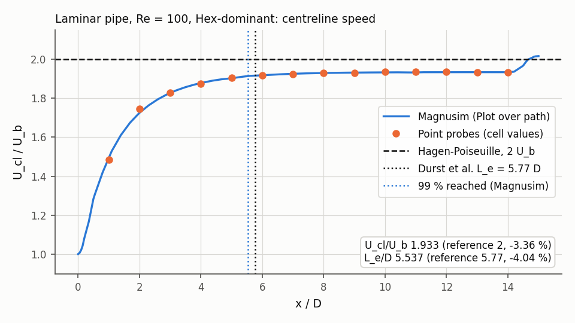
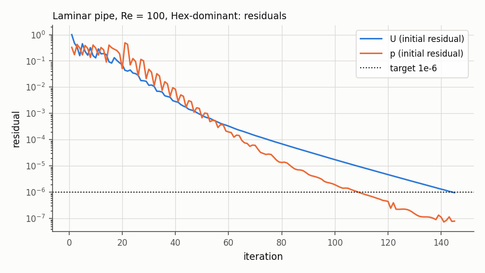
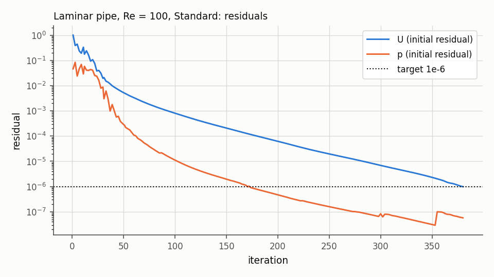

Magnusim validation
Textbook flows with published answers, set up, meshed and solved through the app itself, and compared with their reference values. A value here is what the app produced: nothing is tuned per case and no number is typed in.
Report-only No case fails on these numbers yet. After the first full run the tolerances are locked; from then on a value outside its tolerance blocks a release. The bands shown are the proposed ones.
2026-11-04: commit 4816248f16ae, OpenFOAM v2606 (build _481094f-20260618), 4 cores of a 32-thread PC: c1_laminar_pipe/hexdominant (WSL load 2.42 while it solved), c1_laminar_pipe/standard (WSL load 1.49 while it solved)
Results
| Case | Run | Status | Quantity | Reference | Magnusim | Error | Band |
|---|---|---|---|---|---|---|---|
| Laminar pipe, Re = 100 | Hex-dominant | ok | Darcy friction factor × Re, developed part (x/D 10 to 13) | 64 | 63.268 | -1.14 % | ±2 % (inside) |
| Laminar pipe, Re = 100 | Hex-dominant | ok | Centreline speed / bulk speed, developed part (x/D 10 to 13) | 2 | 2.0021 | +0.11 % | ±1.5 % (inside) |
| Laminar pipe, Re = 100 | Hex-dominant | ok | Development length L_e / D (to 99 % of the developed centreline speed) | 5.77 | 5.5473 | -3.86 % | ±15 % (inside) |
| Laminar pipe, Re = 100 | Standard | ok | Darcy friction factor × Re, developed part (x/D 10 to 13) | 64 | 74.232 | +15.99 % | ±2 % (outside) |
| Laminar pipe, Re = 100 | Standard | ok | Centreline speed / bulk speed, developed part (x/D 10 to 13) | 2 | 2.0026 | +0.13 % | ±1.5 % (inside) |
| Laminar pipe, Re = 100 | Standard | ok | Development length L_e / D (to 99 % of the developed centreline speed) | 5.77 | 5.451 | -5.53 % | ±15 % (inside) |
Laminar pipe, Re = 100
A pipe, D = 20 mm, L = 300 mm (15 D) along +x from x = 0 (STEP in mm, built with OCP); a custom fluid with nu = 0.0002 m²/s and rho = 1 kg/m³, so Re = U D / nu = 100; a velocity inlet of 1 m/s normal to the face, a 0 Pa pressure outlet and a no-slip wall; laminar, steady (simpleFoam), Accurate numerics, residual targets 1e-6, at most 3000 iterations.
Hex-dominant
- Status: ok
- Mesh settings: Hex-dominant at fineness 6 with an Inflate boundary layer of 4 layers, 1 mm in all, on the wall (automatic boundary layers off); 1 non-orthogonal corrector
- Mesh: 128 706 cells (the plan's estimate about 163 000), background block 67 × 8 × 12, wall cells 1.49 × 0.831 × 0.554 mm (x × y × z), generated in 20.1 s; checkMesh OK (max non-orthogonality 69.2°, max skewness 1.49, max aspect ratio 12.4); wall layers applied (pipe_wall 3.83 of 4), first layer 0.179 mm
- Run: 143 iterations, converged at iteration 143; solve 21 s on 4 ranks (Cores 4); run health healthy
- Pre-run check: info still_start: The run starts from rest; starting from potential flow shortens the start-up
- Its estimate before Start: 3,000 iterations at most · ~23 minutes on 4 cores · Re ≈ 100
- Darcy friction factor × Re, developed part (x/D 10 to 13): 63.268 against 64 (-1.14 %, band ±2 % (inside), report-only); ± 0.015 % (the slope's standard error and twice the cross-section's). How: f·Re = 2 D_eff² (−dp/dx) / (mu U_b): dp/dx the least-squares slope of the centreline pressure from Plot over path (0,0,0) to (0.3,0,0) m, 300 subdivisions, over x/D 10 to 13; U_b = Q / A and D_eff = sqrt(4 A / pi), Q the flow through the inlet and A the pipe's meshed cross-section, the mean of the inlet's and the outlet's mesh areas (all three from the run's monitors), since a meshed circle's area is not exactly pi D²/4. Source:
route:/api/plot-over-path. -dp/dx 15.8252 Pa/m from 60 samples (slope standard error 0.01 %, r² 0.999999); D_eff 19.995 mm, U_b 1.0000 m/s. - Centreline speed / bulk speed, developed part (x/D 10 to 13): 2.0021 against 2 (+0.11 %, band ±1.5 % (inside), report-only). How: the centre value u_c of a least-squares fit U_x = u_c + b r² (the developed profile's own form) to the cell values, not interpolated, of every cell whose centre lies in x/D 10 to 13 within R/2 of the axis, read from the run's saved U by the app's own volume loader (case_volume.load_volume, the code behind Plot over path), over U_b = Q / A (as for f·Re). Source:
app_sampling (cell values). u_c 2.0021 m/s (standard error 0.0011) from 400 cells within 5.00 mm of the axis, over U_b 1.0000 m/s; the cells nearest the axis (r = 1.834 mm) read 1.9358 m/s, the exact profile there 1.9327. - Development length L_e / D (to 99 % of the developed centreline speed): 5.5473 against 5.77 (-3.86 %, band ±15 % (inside), report-only). How: the first x where the centreline speed from Plot over path (0,0,0) to (0.3,0,0) m, 300 subdivisions, reaches 99 % of the same line's developed value (its mean over x/D 10 to 13), linearly interpolated between samples, over D_eff. Source:
route:/api/plot-over-path. 99 % of 1.9331 m/s reached at x = 110.9 mm. - Shown, not compared: the pipe's cross-section as meshed 313.99 mm² (inlet 313.99, outlet 313.99; -0.05 % against pi D²/4), so D_eff 19.995 mm and U_b 1 m/s; -dp/dx 15.825 Pa/m (-1.09 % against 32 mu U / D² = 16 Pa/m with the nominal D); the wall shear stress the run saved, over x/D 10 to 13, 0.07904 Pa (-1.22 % against 8 mu U_b / D_eff = 0.08002 Pa), which balances -dp/dx = 4 tau_w / D_eff = 15.813 Pa/m; the inlet's area-averaged pressure 5.606 Pa (the outlet's 0 Pa), flow out against in -0.001 %; Darcy f 0.6328 at Re_eff 99.973; Plot over path's centreline over x/D 10 to 13 1.9331 U_b (the field averaged to the mesh's points); the centreline probes' mean U_x over x/D 10 to 13 1.9335 U_b (the cell holding each point); the 24000 cells of x/D 10 to 13 within an RMS 0.00795 U_b of 2 U_b (1 - (r/R)²) at their own radii; Plot over path's profile at x = 12 D within an RMS 0.0515 U_b of it




Standard
- Status: ok
- Mesh settings: Standard at fineness 6 with its automatic boundary layers and hex core; 2 non-orthogonal correctors
- Mesh: 139 228 cells, generated in 15.1 s; checkMesh OK (max non-orthogonality 67.1°, max skewness 0.928, max aspect ratio 8.63); wall layers applied (pipe_wall 3 of 3), first layer 0.136 mm
- Run: 316 iterations, converged at iteration 316; solve 30 s on 4 ranks (Cores 4); run health healthy
- Pre-run check: info still_start: The run starts from rest; starting from potential flow shortens the start-up
- Its estimate before Start: 3,000 iterations at most · ~4 minutes on 4 cores · Re ≈ 100
- Darcy friction factor × Re, developed part (x/D 10 to 13): 74.232 against 64 (+15.99 %, band ±2 % (outside), report-only); ± 0.041 % (the slope's standard error and twice the cross-section's). How: f·Re = 2 D_eff² (−dp/dx) / (mu U_b): dp/dx the least-squares slope of the centreline pressure from Plot over path (0,0,0) to (0.3,0,0) m, 300 subdivisions, over x/D 10 to 13; U_b = Q / A and D_eff = sqrt(4 A / pi), Q the flow through the inlet and A the pipe's meshed cross-section, the mean of the inlet's and the outlet's mesh areas (all three from the run's monitors), since a meshed circle's area is not exactly pi D²/4. Source:
route:/api/plot-over-path. -dp/dx 18.5985 Pa/m from 60 samples (slope standard error 0.04 %, r² 0.999990); D_eff 19.978 mm, U_b 1.0000 m/s. - Centreline speed / bulk speed, developed part (x/D 10 to 13): 2.0026 against 2 (+0.13 %, band ±1.5 % (inside), report-only). How: the centre value u_c of a least-squares fit U_x = u_c + b r² (the developed profile's own form) to the cell values, not interpolated, of every cell whose centre lies in x/D 10 to 13 within R/2 of the axis, read from the run's saved U by the app's own volume loader (case_volume.load_volume, the code behind Plot over path), over U_b = Q / A (as for f·Re). Source:
app_sampling (cell values). u_c 2.0026 m/s (standard error 0.0007) from 3887 cells within 4.99 mm of the axis, over U_b 1.0000 m/s; the cells nearest the axis (r = 0.001 mm) read 2.0068 m/s, the exact profile there 2.0000. - Development length L_e / D (to 99 % of the developed centreline speed): 5.451 against 5.77 (-5.53 %, band ±15 % (inside), report-only). How: the first x where the centreline speed from Plot over path (0,0,0) to (0.3,0,0) m, 300 subdivisions, reaches 99 % of the same line's developed value (its mean over x/D 10 to 13), linearly interpolated between samples, over D_eff. Source:
route:/api/plot-over-path. 99 % of 1.9513 m/s reached at x = 108.9 mm. - Shown, not compared: the pipe's cross-section as meshed 313.48 mm² (inlet 313.48, outlet 313.48; -0.22 % against pi D²/4), so D_eff 19.978 mm and U_b 1 m/s; -dp/dx 18.598 Pa/m (+16.24 % against 32 mu U / D² = 16 Pa/m with the nominal D); the wall shear stress the run saved, over x/D 10 to 13, 0.09294 Pa (+16.05 % against 8 mu U_b / D_eff = 0.08009 Pa), which balances -dp/dx = 4 tau_w / D_eff = 18.608 Pa/m; the inlet's area-averaged pressure 6.349 Pa (the outlet's 0 Pa), flow out against in 0 %; Darcy f 0.7431 at Re_eff 99.891; Plot over path's centreline over x/D 10 to 13 1.9513 U_b (the field averaged to the mesh's points); the centreline probes' mean U_x over x/D 10 to 13 2.0071 U_b (the cell holding each point); the 27441 cells of x/D 10 to 13 within an RMS 0.0438 U_b of 2 U_b (1 - (r/R)²) at their own radii; Plot over path's profile at x = 12 D within an RMS 0.0723 U_b of it



Notes
- Where the design and the reference data differ, the reference data win: the bands are ±2 % on f·Re and ±1.5 % on U_cl/U_b on both meshers (the design proposed ±2 % / ±5 % and ±2 % / ±3 %), and the developed part read is x/D 10 to 13 (the design's 8 to 13: the reference data ask for stations more than about 10 D from a uniform inlet).
- The bulk speed and D_eff use the pipe's cross-section as meshed (the mean of the inlet's and the outlet's mesh areas, from the run's monitors), not pi D²/4: f·Re goes as the area squared.
- The compared centreline speed comes from the cell values themselves (a fit of U_x = u_c + b r² over the window's cells within R/2 of the axis). Plot over path samples the field averaged to the mesh's points, which reads a peak low where the cells are coarse, and on a mesh whose axis runs along cell edges no cell centre lies on the axis at all; what the line reads on the axis is shown beside the fit, with the profile's RMS difference from the exact parabola at the cells' own radii.
- In these runs (made before the probes read the value at the point: gap G3, fixed since) the centreline Point probes took the value of the cell that holds each point. Where the axis runs along cell edges (Hex-dominant) that is one of the off-axis cells around it, the same cells the fit uses, so the probes are shown, not used as an independent check.
- The development length is read on Plot over path's centreline, against the same line's developed value, so the line's averaging enters both nearly alike. The 99 % point lies where the centreline speed is nearly flat: a change in the fourth digit of the solution moves it by millimetres, and repeated runs of the same plan can read a few per cent apart. Its band is wide (±15 %) for that reason and for the 99 % definition.
- On Standard the friction factor reads well above the exact value. The wall shear stress the run itself saved (shown with each run) carries the same excess, and the cell values run faster than the parabola near the wall and slower at mid-radius, so the pressure drop is the solution's, not an artefact of reading it. It is under investigation (an app gap); the turbulent pipe's Standard runs are read the same way. Probes that change one setting at a time point at the momentum convection scheme on Standard's cells, which are not aligned with the flow: first-order convection raises the friction much further, a finer mesh lowers it only slowly, and neither the gradient limiter, the hex core nor the wall layers account for it.
References
- Darcy friction factor × Re, developed part (x/D 10 to 13): 64 (exact, CONFIRMED). G. Hagen (1839), "Ueber die Bewegung des Wassers in engen cylindrischen Röhren", Ann. Phys. Chem. 46:423-442; J. L. M. Poiseuille (1840), C. R. Acad. Sci. Paris 11:961-967, 1041-1048: the exact (Hagen-Poiseuille) solution of the Navier-Stokes equations for fully developed laminar pipe flow; Darcy f = 64/Re (f = 0.640 at Re 100), i.e. -dp/dx = 32 mu U / D² = 16 Pa/m here. Conditions: fully developed, steady, Newtonian; Re = rho U D / mu with U the bulk (mean) speed; Re = 100.
- Centreline speed / bulk speed, developed part (x/D 10 to 13): 2 (exact, CONFIRMED). G. Hagen (1839), "Ueber die Bewegung des Wassers in engen cylindrischen Röhren", Ann. Phys. Chem. 46:423-442; J. L. M. Poiseuille (1840), C. R. Acad. Sci. Paris 11:961-967, 1041-1048: the exact (Hagen-Poiseuille) solution of the Navier-Stokes equations for fully developed laminar pipe flow; u(r) = 2 U (1 - (r/R)²), so u_c = 2.000 U. Conditions: fully developed, steady, Newtonian; Re = rho U D / mu with U the bulk (mean) speed; Re = 100.
- Development length L_e / D (to 99 % of the developed centreline speed): 5.77 (correlation, SECONDARY). F. Durst, S. Ray, B. Ünsal, O. A. Bayoumi (2005), "The development lengths of laminar pipe and channel flows", J. Fluids Eng. 127:1154-1160; the pipe correlation L/D = [0.619^1.6 + (0.0567 Re)^1.6]^(1/1.6) (constants as quoted from the abstract by citing papers; error under 3 % for all laminar Re), 5.77 at Re 100. Conditions: laminar, uniform inlet; the distance to 99 % of the developed centreline velocity; Re = 100. Depends on the 99 % definition and on the inlet profile; the 0.05 Re rule (5.0) is about 13 % short.
Heat Transfer
Heat Transfer's own validation set: natural convection in a square cavity (de Vahl Davis), forced convection in a pipe (laminar and turbulent) and conduction through solids, each against its published value. Its runs go another way than the cases above: each case is a study set up in Python, meshed by the app's mesher and solved by the plugin's prepare job and solve.sh in WSL (the relay Start uses), not sent over the app's HTTP routes, so the two sets exercise different parts of the app. Report-only, as above. Its rows are the ones it committed (bundled-plugins/heat_transfer/validation/results.json, from pytest -m validation there); they were not run again for this report. Its own report: bundled-plugins/heat_transfer/VALIDATION.md.
Results of 2026-10-15 (Heat Transfer 0.1.0, OpenFOAM v2606 (build _481094f-20260618)).
| Case | Quantity | Reference | Magnusim | Error | Mesher | Cells | Iterations |
|---|---|---|---|---|---|---|---|
| de Vahl Davis cavity, Ra = 1e3 | Nu-bar (mean of the hot and cold walls) | 1.118 | 1.118 ± 0.00 % | +0.00 % | Hex-dominant | 105 518 | 1500 |
| de Vahl Davis cavity, Ra = 1e3 | Nu_max (hot wall) | 1.505 | 1.507 | +0.13 % | Hex-dominant | 105 518 | 1500 |
| de Vahl Davis cavity, Ra = 1e4 | Nu-bar (mean of the hot and cold walls) | 2.243 | 2.245 ± 0.00 % | +0.09 % | Hex-dominant | 105 518 | 2000 |
| de Vahl Davis cavity, Ra = 1e4 | Nu_max (hot wall) | 3.528 | 3.522 | -0.17 % | Hex-dominant | 105 518 | 2000 |
| de Vahl Davis cavity, Ra = 1e5 | Nu-bar (mean of the hot and cold walls) | 4.519 | 4.494 ± 0.00 % | -0.55 % | Hex-dominant | 105 518 | 2500 |
| de Vahl Davis cavity, Ra = 1e5 | Nu_max (hot wall) | 7.717 | 7.611 | -1.37 % | Hex-dominant | 105 518 | 2500 |
| de Vahl Davis cavity, Ra = 1e6 | Nu-bar (mean of the hot and cold walls) | 8.800 | 8.745 ± 0.89 % | -0.63 % | Hex-dominant | 196 640 | 4000 |
| de Vahl Davis cavity, Ra = 1e6 | Nu_max (hot wall) | 17.93 | 17.06 | -4.83 % | Hex-dominant | 196 640 | 4000 |
| Laminar pipe, fixed wall heat flux (10 W/m²) | Nu (fully developed) | 4.364 | 4.360 ± 1.44 % | -0.09 % | Hex-dominant | 124 242 | 3000 |
| Laminar pipe, fixed wall heat flux (10 W/m²) | Nu (fully developed) | 4.364 | 4.967 ± 0.18 % | +13.81 % | Standard | 139 169 | 3000 |
| Laminar pipe, fixed wall temperature (30 °C, inlet 20 °C) | Nu (fully developed) | 3.657 | 3.644 ± 1.77 % | -0.35 % | Hex-dominant | 124 662 | 3000 |
| Laminar pipe, fixed wall temperature (30 °C, inlet 20 °C) | Nu (fully developed) | 3.657 | 4.135 ± 0.35 % | +13.07 % | Standard | 139 200 | 3000 |
| Turbulent pipe, fixed wall heat flux (1000 W/m²) | Nu (17.5 to 22.5 D from the inlet) | 106.9 | 96.63 ± 0.13 % | -9.64 % | Hex-dominant | 59 736 | 2000 |
| Turbulent pipe, fixed wall heat flux (1000 W/m²) | Nu (17.5 to 22.5 D from the inlet) | 106.9 | 85.03 ± 0.39 % | -20.48 % | Standard | 36 219 | 2000 |
| Composite wall (steel 10 mm, stainless steel 20 mm) | Heat through the wall (W) | 5.338 | 5.343 | +0.11 % | Hex-dominant | 13 634 | 600 |
| Heated block (stainless steel, 10 W, h = 500 W/(m²·K)) | Heat out (W) | 10.00 | 10.00 | +0.00 % | Hex-dominant | 12 576 | 800 |
| Heated block (stainless steel, 10 W, h = 500 W/(m²·K)) | Highest temperature rise (K) | 14.60 | 14.60 | +0.03 % | Hex-dominant | 12 576 | 800 |
Natural convection
de Vahl Davis cavity, Ra = 1e3. square cavity L = 0.1 m as a 40 mm slab (symmetry on both faces), ΔT = 10 K, Pr = 0.71, β ΔT = 0.01 (Boussinesq), laminar, buoyantSimpleFoam, Accurate numerics. Reference: G. de Vahl Davis, Natural convection of air in a square cavity: a bench mark numerical solution, Int. J. Numer. Methods Fluids 3 (1983) 249-264, Table IV.
- Nu-bar (mean of the hot and cold walls) on Hex-dominant: 1.118 ± 0.00 % against 1.118 (+0.00 %); mesh: Hex-dominant fineness 4, 4 layers on the hot and cold walls; hot wall 1.1180 (de Vahl Davis's hot-wall Nu_0 1.117), cold wall 1.1180: 0.00 % apart, half of it the ± here; the mean moved 0.001 % over the last fifth of the iterations; layers: cold 4 of 4 layers, 100 % of the thickness; hot 4 of 4 layers, 100 % of the thickness.
- Nu_max (hot wall) on Hex-dominant: 1.507 against 1.505 (+0.13 %); mesh: Hex-dominant fineness 4, 4 layers on the hot and cold walls; at y/L = 0.0930 (reference 0.092, 0.0010 off), read on the faces of the slab's middle half between y/L 0.01 and 0.99 (not the corner faces); layers: cold 4 of 4 layers, 100 % of the thickness; hot 4 of 4 layers, 100 % of the thickness.
de Vahl Davis cavity, Ra = 1e4. square cavity L = 0.1 m as a 40 mm slab (symmetry on both faces), ΔT = 10 K, Pr = 0.71, β ΔT = 0.01 (Boussinesq), laminar, buoyantSimpleFoam, Accurate numerics. Reference: G. de Vahl Davis, Natural convection of air in a square cavity: a bench mark numerical solution, Int. J. Numer. Methods Fluids 3 (1983) 249-264, Table IV.
- Nu-bar (mean of the hot and cold walls) on Hex-dominant: 2.245 ± 0.00 % against 2.243 (+0.09 %); mesh: Hex-dominant fineness 4, 4 layers on the hot and cold walls; hot wall 2.2449 (de Vahl Davis's hot-wall Nu_0 2.238), cold wall 2.2449: 0.00 % apart, half of it the ± here; the mean moved 0.000 % over the last fifth of the iterations; layers: cold 4 of 4 layers, 100 % of the thickness; hot 4 of 4 layers, 100 % of the thickness.
- Nu_max (hot wall) on Hex-dominant: 3.522 against 3.528 (-0.17 %); mesh: Hex-dominant fineness 4, 4 layers on the hot and cold walls; at y/L = 0.1388 (reference 0.143, 0.0042 off), read on the faces of the slab's middle half between y/L 0.01 and 0.99 (not the corner faces); layers: cold 4 of 4 layers, 100 % of the thickness; hot 4 of 4 layers, 100 % of the thickness.
de Vahl Davis cavity, Ra = 1e5. square cavity L = 0.1 m as a 40 mm slab (symmetry on both faces), ΔT = 10 K, Pr = 0.71, β ΔT = 0.01 (Boussinesq), laminar, buoyantSimpleFoam, Accurate numerics. Reference: G. de Vahl Davis, Natural convection of air in a square cavity: a bench mark numerical solution, Int. J. Numer. Methods Fluids 3 (1983) 249-264, Table IV.
- Nu-bar (mean of the hot and cold walls) on Hex-dominant: 4.494 ± 0.00 % against 4.519 (-0.55 %); mesh: Hex-dominant fineness 4, 4 layers on the hot and cold walls; hot wall 4.4940 (de Vahl Davis's hot-wall Nu_0 4.509), cold wall 4.4940: 0.00 % apart, half of it the ± here; the mean moved 0.000 % over the last fifth of the iterations; layers: cold 4 of 4 layers, 100 % of the thickness; hot 4 of 4 layers, 100 % of the thickness.
- Nu_max (hot wall) on Hex-dominant: 7.611 against 7.717 (-1.37 %); mesh: Hex-dominant fineness 4, 4 layers on the hot and cold walls; at y/L = 0.0815 (reference 0.081, 0.0005 off), read on the faces of the slab's middle half between y/L 0.01 and 0.99 (not the corner faces); layers: cold 4 of 4 layers, 100 % of the thickness; hot 4 of 4 layers, 100 % of the thickness.
de Vahl Davis cavity, Ra = 1e6. square cavity L = 0.1 m as a 40 mm slab (symmetry on both faces), ΔT = 10 K, Pr = 0.71, β ΔT = 0.01 (Boussinesq), laminar, buoyantSimpleFoam, Accurate numerics. Reference: G. de Vahl Davis, Natural convection of air in a square cavity: a bench mark numerical solution, Int. J. Numer. Methods Fluids 3 (1983) 249-264, Table IV.
- Nu-bar (mean of the hot and cold walls) on Hex-dominant: 8.745 ± 0.89 % against 8.800 (-0.63 %); mesh: Hex-dominant fineness 5, 5 layers on the hot and cold walls; hot wall 8.8219 (de Vahl Davis's hot-wall Nu_0 8.817), cold wall 8.6672: 1.77 % apart, half of it the ± here; the mean moved 0.051 % over the last fifth of the iterations; layers: cold 5 of 5 layers, 100 % of the thickness; hot 5 of 5 layers, 100 % of the thickness.
- Nu_max (hot wall) on Hex-dominant: 17.06 against 17.93 (-4.83 %); mesh: Hex-dominant fineness 5, 5 layers on the hot and cold walls; at y/L = 0.0330 (reference 0.0378, 0.0048 off), read on the faces of the slab's middle half between y/L 0.01 and 0.99 (not the corner faces); layers: cold 5 of 5 layers, 100 % of the thickness; hot 5 of 5 layers, 100 % of the thickness.
Forced convection
Laminar pipe, fixed wall heat flux (10 W/m²). pipe D = 20 mm, L = 300 mm, air with constant properties (Pr = 0.731), Re = 100 (uniform inlet 0.0758 m/s at 20 °C), gravity off, laminar, buoyantSimpleFoam; Nu the mean of ten 10 mm slices from x = 150 to 250 mm (x / (D Re Pr) from 0.10), its ± the standard error of that mean. Reference: R. K. Shah and A. L. London, Laminar Flow Forced Convection in Ducts, Academic Press (1978), circular duct, fully developed.
- Nu (fully developed) on Hex-dominant: 4.360 ± 1.44 % against 4.364 (-0.09 %); mesh: Hex-dominant fineness 6, 4 layers on the wall; slices 155 mm: 4.407, 165 mm: 4.186, 175 mm: 4.295, 185 mm: 4.650, 195 mm: 4.223, 205 mm: 4.174, 215 mm: 4.614, 225 mm: 4.255, 235 mm: 4.171, 245 mm: 4.626 (lowest 4.171, highest 4.650); at 205 mm T_wall 299.457 K, T_bulk 297.551 K (mixing cup), q 10.000 W/m²; layers: heated 3.58 of 4 layers, 89.9 % of the thickness.
- Nu (fully developed) on Standard: 4.967 ± 0.18 % against 4.364 (+13.81 %); mesh: Standard fineness 6, layers on; slices 155 mm: 4.896, 165 mm: 4.992, 175 mm: 4.979, 185 mm: 4.973, 195 mm: 4.996, 205 mm: 4.972, 215 mm: 4.963, 225 mm: 4.965, 235 mm: 4.961, 245 mm: 4.973 (lowest 4.896, highest 4.996); at 205 mm T_wall 299.219 K, T_bulk 297.619 K (mixing cup), q 10.000 W/m²; layers applied: yes.
Laminar pipe, fixed wall temperature (30 °C, inlet 20 °C). pipe D = 20 mm, L = 300 mm, air with constant properties (Pr = 0.731), Re = 100 (uniform inlet 0.0758 m/s at 20 °C), gravity off, laminar, buoyantSimpleFoam; Nu the mean of ten 10 mm slices from x = 150 to 250 mm (x / (D Re Pr) from 0.10), its ± the standard error of that mean. Reference: R. K. Shah and A. L. London, Laminar Flow Forced Convection in Ducts, Academic Press (1978), circular duct, fully developed.
- Nu (fully developed) on Hex-dominant: 3.644 ± 1.77 % against 3.657 (-0.35 %); mesh: Hex-dominant fineness 6, 4 layers on the wall; slices 155 mm: 3.642, 165 mm: 3.479, 175 mm: 3.567, 185 mm: 3.937, 195 mm: 3.518, 205 mm: 3.464, 215 mm: 3.926, 225 mm: 3.524, 235 mm: 3.463, 245 mm: 3.925 (lowest 3.463, highest 3.937); at 205 mm T_wall 303.150 K, T_bulk 302.147 K (mixing cup), q 4.366 W/m²; layers: heated 3.6 of 4 layers, 90.4 % of the thickness.
- Nu (fully developed) on Standard: 4.135 ± 0.35 % against 3.657 (+13.07 %); mesh: Standard fineness 6, layers on; slices 155 mm: 4.046, 165 mm: 4.156, 175 mm: 4.171, 185 mm: 4.134, 195 mm: 4.193, 205 mm: 4.113, 215 mm: 4.107, 225 mm: 4.131, 235 mm: 4.194, 245 mm: 4.105 (lowest 4.046, highest 4.194); at 205 mm T_wall 303.150 K, T_bulk 302.439 K (mixing cup), q 3.675 W/m²; layers applied: yes.
Turbulent pipe, fixed wall heat flux (1000 W/m²). pipe D = 20 mm, L = 500 mm, air with constant properties (Pr = 0.731), Re = 50 000 (uniform inlet 37.89 m/s at 20 °C, the inlet's default turbulence), gravity off, k-omega SST with wall functions (no layers), buoyantSimpleFoam; Nu the mean of five 20 mm slices from x = 350 to 450 mm (17.5 to 22.5 D after the uniform inlet: the flow is still developing there, and a developing flow's Nu is above the developed one, so the developed value would read lower still). Reference: V. Gnielinski, New equations for heat and mass transfer in turbulent pipe and channel flow, Int. Chem. Eng. 16 (1976) 359-368, with Petukhov's friction factor.
- Nu (17.5 to 22.5 D from the inlet) on Hex-dominant: 96.63 ± 0.13 % against 106.9 (-9.64 %); mesh: Hex-dominant fineness 6, no layers; wall y+ in the slices 12.4 to 55.72 (mean 25.47); slices 360 mm: 96.495, 380 mm: 96.489, 400 mm: 96.514, 420 mm: 97.122, 440 mm: 96.548 (lowest 96.489, highest 97.122); at 400 mm T_wall 303.096 K, T_bulk 294.853 K, q 1000.00 W/m². An under-prediction not explained yet (Gnielinski's own scatter is about ±10 %).
- Nu (17.5 to 22.5 D from the inlet) on Standard: 85.03 ± 0.39 % against 106.9 (-20.48 %); mesh: Standard fineness 6, no layers; wall y+ in the slices 46.22 to 108.47 (mean 64.3); slices 360 mm: 84.436, 380 mm: 86.286, 400 mm: 85.039, 420 mm: 84.657, 440 mm: 84.753 (lowest 84.436, highest 86.286); at 400 mm T_wall 304.209 K, T_bulk 294.854 K, q 999.98 W/m². An under-prediction not explained yet (Gnielinski's own scatter is about ±10 %); layers applied: no.
Conduction (CHT)
Composite wall (steel 10 mm, stainless steel 20 mm). two solids 10 x 10 mm across, steel (k 63.9) 10 mm and stainless steel 304 (k 14.9) 20 mm, 100 °C and 20 °C on their outer faces, every other face adiabatic; chtMultiRegionSimpleFoam. Reference: 1D conduction through two layers in series, q = ΔT / (L1/k1 + L2/k2).
- Heat through the wall (W) on Hex-dominant: 5.343 against 5.338 (+0.11 %); mesh: Hex-dominant fineness 3; heat out 5.34343 W; every cell within 0.48 % of ΔT of the 1D profile.
Heated block (stainless steel, 10 W, h = 500 W/(m²·K)). stainless steel 304 block 40 x 40 x 10 mm, 10 W spread evenly, its bottom cooled by h = 500 W/(m²·K) to 20 °C, every other face adiabatic; chtMultiRegionSimpleFoam (one region).
- Heat out (W) on Hex-dominant: 10.00 against 10.00 (+0.00 %); reference: energy balance: the source's power; mesh: Hex-dominant fineness 3.
- Highest temperature rise (K) on Hex-dominant: 14.60 against 14.60 (+0.03 %); reference: 1D conduction with a uniform source: Q / (h A) + q''' L² / (2 k); mesh: Hex-dominant fineness 3.
How to reproduce
On Windows with Magnusim's Setup done (WSL with OpenFOAM v2606), from magnusim-web:
npm run test:validation npm run validation:report
Heat Transfer's set, from magnusim-web/python:
pytest -m validation ../bundled-plugins/heat_transfer/tests -s python ../bundled-plugins/heat_transfer/validation/report.py
Each run's requests are in validation/results/<case>/<variant>/plan.json and its values, their sources, the mesh, the run and its health in result.json beside it; results.json holds them all.